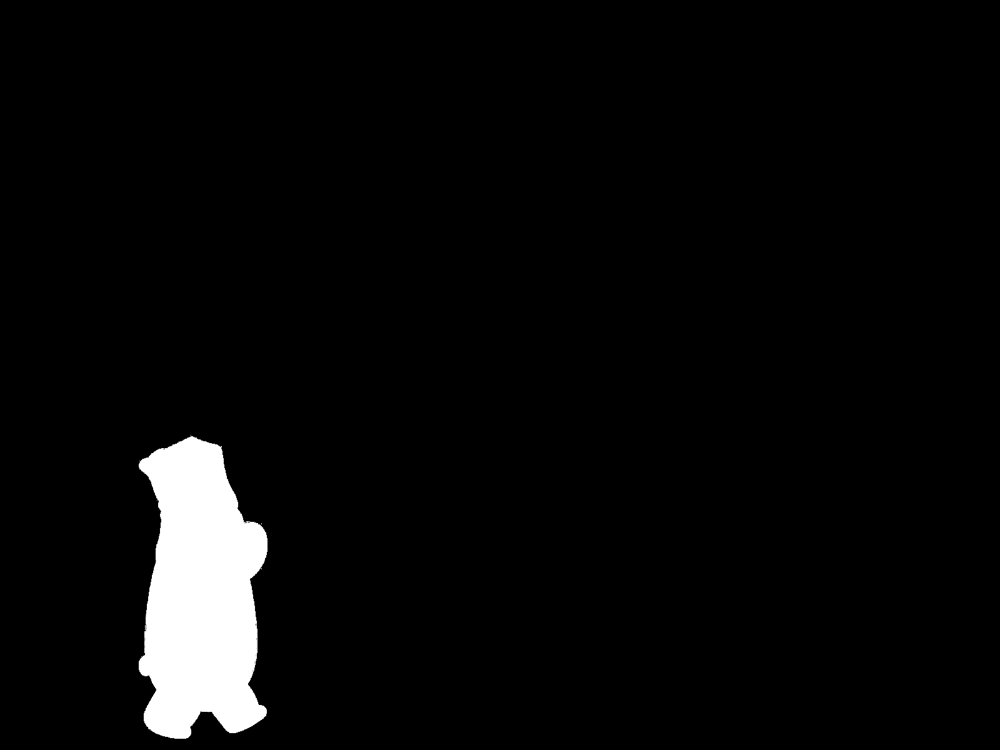
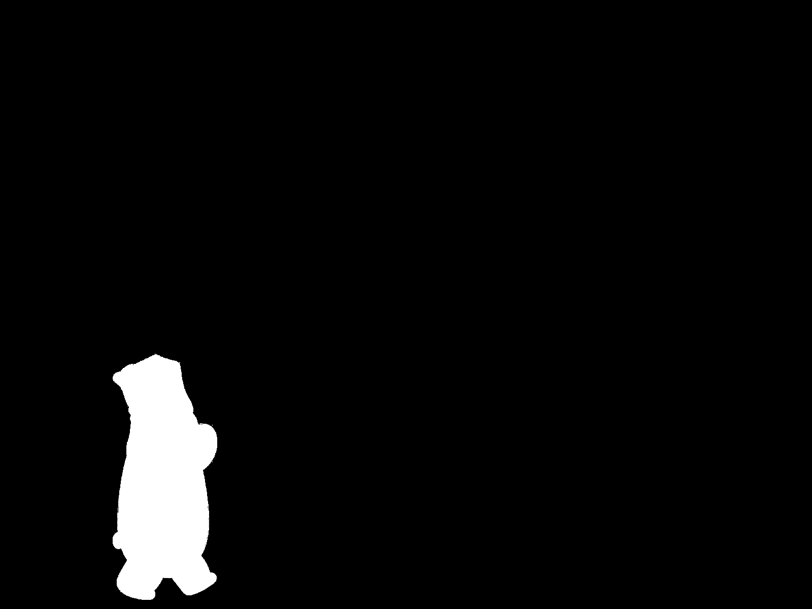

Project 2: Fun with Filters and Frequencies
1.1: Finite Difference Operator
Use finite difference filters Dx = [-1 1] and Dy = [-1 1]T to compute Gm = √(Gx² + Gy²), where Gx is the partial derivative of the original image with respect to x (and Gy is with respect to y).
Convolve cameraman.png with Dx and Dy to get Gx and Gy. From there, use the gradient magnitude formula to generate Gm. Binarized (threshold = 0.25) to create the final photo.


In order (left to right): Original Image, Gx, Gy, Gm (Gradient Magnitude Image), Edge Image (Threshold = 0.25)
1.2: Derivative of Gaussian Filters
Convolve cameraman.png with a 2D Gaussian filter to blur it. Repeat 1.1 steps.
Compared to 1.1, 1.2's edge images are smoother. They also have less noise and thicker edges. Method 1 and Method 2 produce the same results (makes sense given convolution is associative and commutative).
Method 1: Apply filters to blurred image
In order (left to right): Blurred Image, Gx,b, Gy,b, Gm,b, Edge Image (Threshold = 0.25)


Method 2: Generate derivatives of Gaussian filters then convolve with blurred image
In order: Dx filter, Dy filter, Gx,b, Gy,b, Gm,b, Edge Image (Threshold = 0.25)


2.1: Image “Sharpening”
Use the unsharp masking technique. Blur image with a Gaussian filter, then original image minus blurred image (which has low frequencies) to get the high frequencies. Return original image plus alpha multiplied by the high frequencies.
For all images: Gaussian filter with kernel size 20 and sigma value 3.
taj.jpg
Alpha values of [1, 2, 4, 6] in order.
remy.jpg
Alpha values of [1, 2, 4, 6] in order.
Blur then sharpen elephant.jpg
In order (left to right): Original Image, Blurred Image, Sharpened from Blurred Image (Alpha = 2)
A lot of the details from the original are lost in the sharpened-from-blurred image. Edges are still pronounced compared to the original. Quality wise, sharpened-from-blurred image is in-between the original and blurred image.
2.2: Hybrid Images
Generate image A's low frequencies by applying a Gaussian filter. Generate image B's high frequencies by subtracting the Gaussian filter applied to image B from the original image. Create hybrid image by adding image A's low frequencies with image B's high frequencies.
derek.jpg and nutmeg.jpg
Gaussian filter with kernel size 31 and sigma value 8.
Rotated, stretched, and shifted Nutmeg to align with Derek.
In order (left to right): Derek (low frequency), Nutmeg (high frequency), Hybrid Image


Failure: pikachu.jpg and squirrel.jpg
Gaussian filter with kernel size 31 and sigma value 12.
Result was not great, mainly due to Pikachu's bright colors and distinictive strokes.
In order (left to right): Pikachu (low frequency), Squirrel (high frequency), Hybrid Image
Favorite: bread.jpg and dog.jpg
Gaussian filter with kernel size 9 and sigma value 7.
In order (left to right): Bread (low frequency), Dog (high frequency), Hybrid Image
Frequency Analysis: bread.jpg and dog.jpg
In order (left to right): Bread Frequency, Bread Frequency (low), Dog Frequency, Dog Frequency (high), Hybrid Frequency
2.3: Gaussian and Laplacian Stacks
Gaussian stacks for the apple and orange images with depth 10, kernel size 5, and sigma value 13. Generate by continuously applying Gaussian filter to the most current layer.
Laplacian stacks generated by taking the Gaussian stack layer at index i minus Gaussian stack layer at index i+1. Last layer of the Laplacian stack is the last layer of the Gaussian stack.
apple.jpeg Gaussian Stack
orange.jpeg Gaussian Stack
apple.jpeg Laplacian Stack
orange.jpeg Laplacian Stack
Failure (No Blend): Figure 3.42 Recreation
Blend: Figure 3.42 Recreation
2.4: Multiresolution Blending
Same process as 2.3 but also create a Gaussian stack for the mask. Generate blended image with the pseudocode below.
for i in len(laplacian_stacks):
blended_image += laplacian_stack_imgA[i] * mask_stack[i] + laplacian_stack_imgB[i] * (1 - mask_stack[i])
apple.jpeg and orange.jpeg
Gaussian filter with kernel size 100 and sigma value 13.
In order (left to right): Apple Image, Orange Image, Mask Image, Blended Image (Oraple)


lemon.jpg and lime.jpg
Gaussian filter with kernel size 100 and sigma value 13.
In order (left to right): Lemon Image, Lime Image, Mask Image, Blended Image

dumbo.jpg and webarebears.jpg
Gaussian filter with kernel size 5 and sigma value 24.
In order (left to right): Dumbo Image, We Bare Bears Image, Mask Image, Blended Image
 

Figure 10 Recreation: dumbo.jpg and webarebears.jpg
Reflections
Super interesting project! Most important thing I learned is to take my time with understanding the intermediate steps (breaking the project into different parts and ramping them up lended itself well to this). I had fun with how creative we could be :D
Bells and Whistles
Used color for both 2.2 and 2.4. In my experience with 2.2, I found that using color images for both low and high frequency images gave the best results.
Random failure that was fun! (inverted my mask)